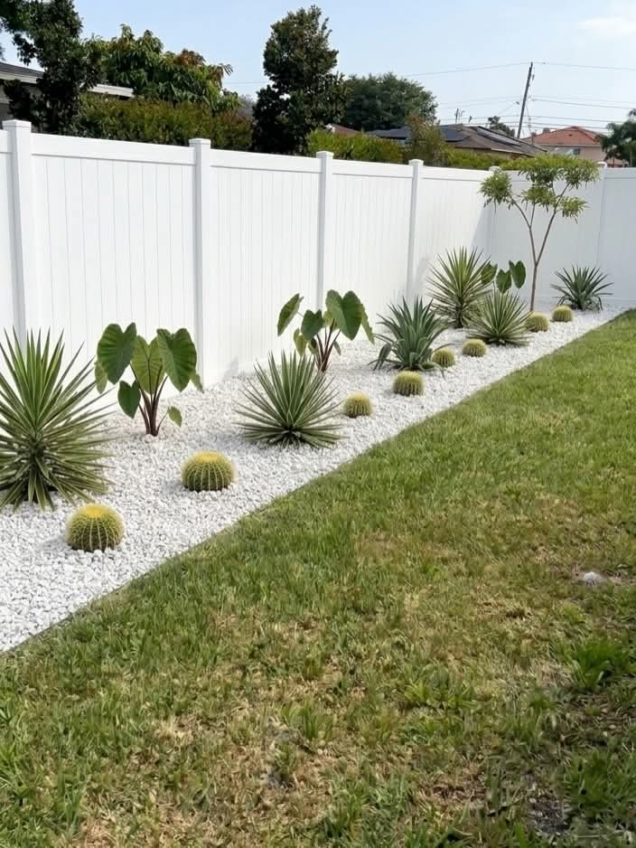

Every once in a while, a project comes along that perfectly captures what Pavers Ordonez is all about — combining craftsmanship, design, and problem-solving to create something truly special. This Jupiter, FL backyard transformation is one of our favorites from 2025.
The Challenge
The homeowners came to us with a backyard that had three major issues: a patchy, dying lawn that flooded after every rain, an old concrete patio slab that was cracked and settling, and no real outdoor living space despite having a large pool. Their goal was to create a cohesive, maintenance-friendly outdoor area they could actually enjoy year-round.
The Solution
After a detailed site assessment, we designed a three-phase project:
Phase 1 — Drainage: We installed a French drain system along the back property line and regraded the entire yard with a proper slope toward the drain. This eliminated the flooding problem permanently.
Phase 2 — Paver Patio & Pool Deck: We removed the old concrete slab and installed 1,200 square feet of travertine pavers in a running bond pattern. The travertine extends from the back of the house all the way to the pool coping, creating a unified surface that keeps cool even in the summer heat.

Phase 3 — Landscaping: Around the perimeter of the new paver area, we installed a mix of Pygmy Date Palms, Dwarf Bougainvillea, Liriope border plants, and fresh St. Augustine sod. We also added river rock beds under the palms to reduce irrigation needs and complement the travertine color palette.
Project Stats: 1,200 sq ft travertine paver installation | French drain system | Full sod replacement | 14 new palms and plants installed | 5-day completion | Jupiter, FL
The Result
The homeowners now have a stunning, maintenance-free outdoor living space that they use almost every day. No more flooding, no more cracked concrete, and no more dead grass. The travertine stays cool enough to walk on barefoot all summer, and the landscaping provides privacy from the neighbors.
Could We Do This for Your Home?
Whether your project is a small patio refresh or a full backyard transformation like this one, Pavers Ordonez handles it all in-house — from design to drainage to planting. Call (561) 970-1917 for your free consultation.